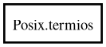

Posix.termios – posix Reference Manual
Packages
posix
Posix
termios
c_cc
c_cflag
c_iflag
c_ispeed
c_lflag
c_line
c_oflag
c_ospeed
termios
Object Hierarchy:

Description:
[
CCode
( cname =
"struct termios"
, has_type_id =
false
) ]
public
struct
termios
Namespace:
Posix
Package:
posix
Content:
Fields:
public
tcflag_t
c_iflag
public
tcflag_t
c_oflag
public
tcflag_t
c_cflag
public
tcflag_t
c_lflag
public
cc_t
c_line
public
cc_t
[]
c_cc
public
speed_t
c_ispeed
public
speed_t
c_ospeed